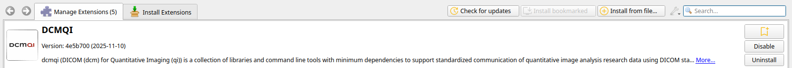
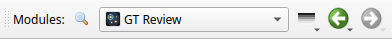
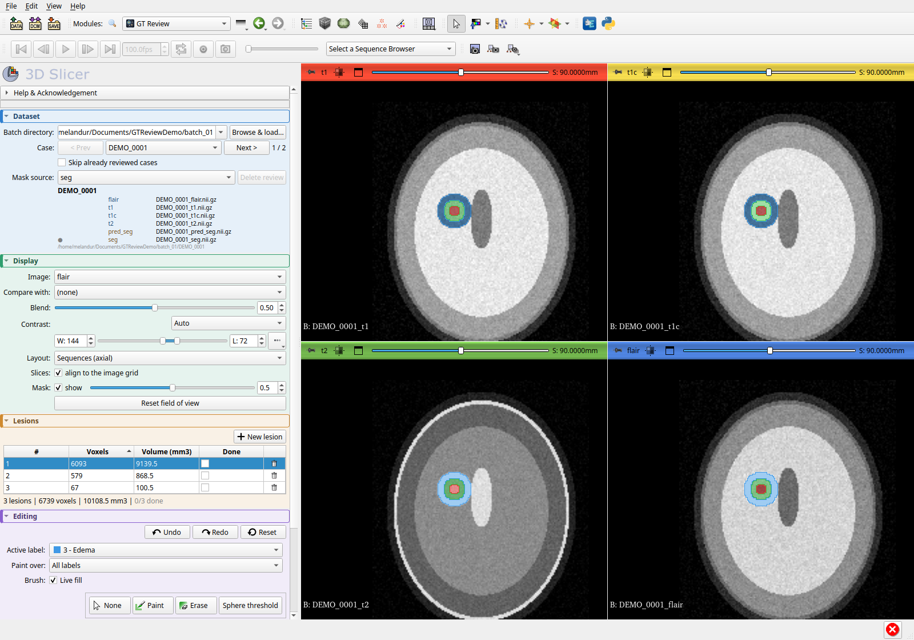
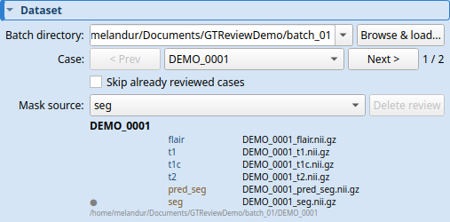
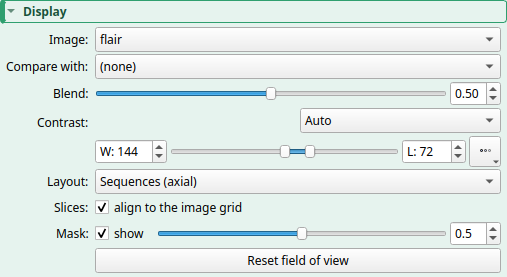
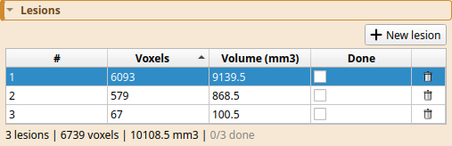
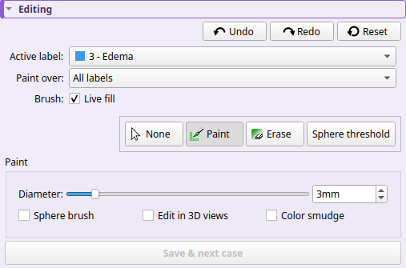
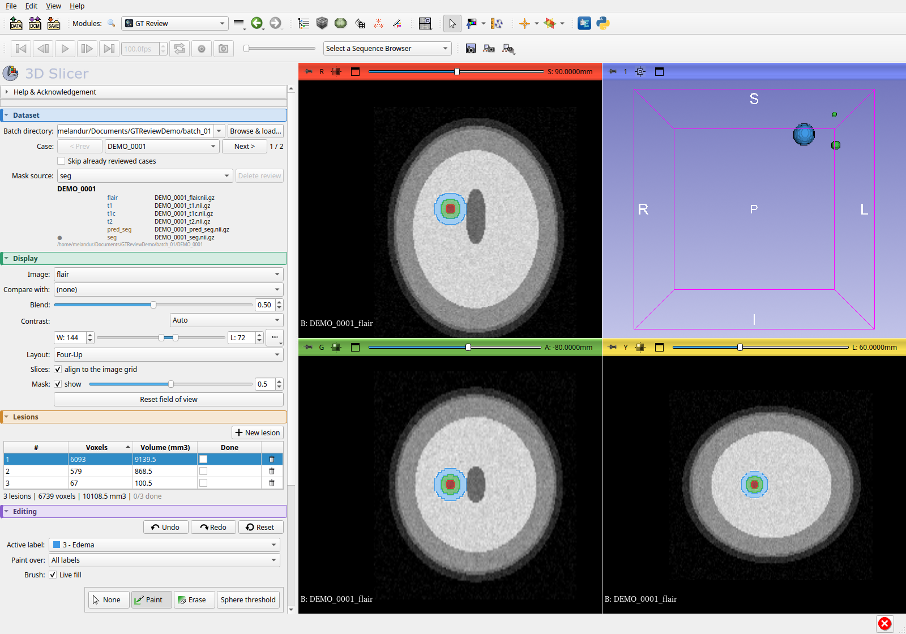

GTReview: install and first review
From a fresh 3D Slicer to a saved review in four steps. Only what you need per box; the full control-by-control reference is in the panel guide.
1Install 3D Slicer 5.12
Download the Stable release, 5.12.4, for your platform from download.slicer.org (not the Preview) and install it like any other application.
- Linux: unpack the
.tar.gzanywhere and runSlicerinside it. - Windows: run the installer; Slicer lands under
AppData\Local\slicer.org\Slicer 5.12.4. If IT installed it underProgram Filesinstead, see the note at the end of step 2. - macOS: open the
.dmg, dragSlicer.appto/Applicationsor~/Applications, and always launch it from there. Never run it from the DMG: the plugin is installed insideSlicer.app, which is read-only on the disk image.
2Install the plugin
Get the package from the repository's Packages/ folder. There is one archive per Slicer
version and platform, named for both. Pick the one matching your Slicer version and platform:
- Linux, Slicer 5.12.x:
GTReview-for-Slicer-5.12-linux-amd64-….tar.gz - Windows, Slicer 5.12.x:
GTReview-for-Slicer-5.12-win-amd64-….zip - macOS, Slicer 5.12.3 or 5.12.4:
GTReview-for-Slicer-5.12.3-and-5.12.4-macosx-amd64-….tar.gz - Linux, Slicer 5.10:
GTReview-for-Slicer-5.10-linux-amd64-….tar.gz
Clone the repository (git clone https://github.com/melandur/SlicerGTReview.git), or open the
archive's page on GitHub and press Download raw file, or fetch it with
curl -LO https://github.com/melandur/SlicerGTReview/raw/main/Packages/<file>,
the archive's full name in place of <file>. Use that raw link: the ordinary
link to the file is GitHub's web page about it, not the archive. On a Mac do not download it with Safari: it
may unpack the .tar.gz as soon as it arrives, and Slicer needs the archive itself.
- In Slicer open View → Extensions Manager.
- Click Install from file… (top right) and choose the archive.
- Click Restart when asked.

- A Preview Slicer (5.13) does not load the package, even when it installs without an error. Install the Stable 5.12.
- Slicer installed by IT under
Program Files: Slicer puts plugins in theslicer.orgfolder inside its own folder, where a normal account cannot write, and it saves the setting that would move them in that same folder, so changing it does not help. Install Slicer per user instead, as the installer does by default (underAppData\Local\slicer.org), or ask IT to give you write access to<Slicer folder>\slicer.org. Then install the plugin again. - Listed in the Extensions Manager, but no module (antivirus can interrupt the unpacking): uninstall it under Manage Extensions, restart Slicer, and install it again.
GTReview.py, restart. No package needed.
3Open the plugin
Use the Modules dropdown in the toolbar: it is listed under Segmentation → GT Review.
Or click the magnifier next to it and type GT.

4Review a case
The panel has four boxes, top to bottom, in the order you use them. With several sequences per case the views open side by side, one axial view per sequence, and scrolling one scrolls them all.

Dataset · where the cases are
- Batch directory: the folder that holds one sub-folder per case. Press Browse & load….
- Case: step with < Prev / Next >; the counter shows where you are.
- Mask source: which mask to start from (
seg,pred_seg, a saved review, or empty). - Tick Skip already reviewed cases to go straight to the unfinished ones.

Display · what you look at
- Image: the sequence for the brush and for single-image layouts.
- Compare with / Blend: overlay a second sequence and fade between the two.
- Layout: Sequences (axial) for all sequences at once, Four-Up for axial, sagittal, coronal and 3D.
- Mask: show or hide the overlay and set its opacity.

Lesions · the checklist
- One row per connected lesion, largest first. Click a row to jump every view onto it.
- Tick Done once you are happy with that lesion. The trash icon deletes it outright.
- + New lesion unlocks the brush to paint a lesion that is missing.
- The list recounts itself a moment after you stop painting.

Editing · fixing a lesion
- Editing is unlocked only while a lesion is selected or New lesion is active.
- Active label: what the brush lays down: 1 Necrosis and Cavity, 2 Enhancing Tumor, 3 Edema, or Background to erase.
- Paint over: which existing voxels the brush may replace.
- Paint, Erase, Sphere threshold (click the centre, drag outwards, release).
- Undo steps back one whole stroke. Reset reloads the mask from disk.
- Untick Live fill if long strokes stutter on big volumes.

Save
When every lesion is ticked Done, Save & next case at the bottom writes
<case>_reviewed_seg.nii.gz next to the original files and moves on. The original masks are never modified.

Keys
| 1 2 3 | Paint, Erase, Sphere threshold |
| Esc | stop editing |
| Del | delete the selected lesion |
| Ctrl+Z / Ctrl+Y | undo / redo a whole stroke |
| Ctrl+S | save without moving on |
| a / d | mask more transparent / more opaque |
| s | hide / show the mask |
On a Mac, press ⌘ Command where the table says Ctrl, and the delete key (⌫) for Del.
If something goes wrong
GTReview writes a log, GTReview.log, into the batch directory you loaded, as soon as
Browse & load… finds cases there. Every session that loads the folder adds to the end of it.
- It holds GTReview's messages and errors with their tracebacks, any uncaught error in GTReview's code, and warnings and errors from Slicer, VTK and Qt; a run of identical ones is written once, with a count. Slicer's warnings are copied when Slicer gets back to its event loop, so one can show up below GTReview lines that came after it.
- If Slicer crashes, the Python stack at that moment is in it. Not on Windows: crash reports are off there.
- If Slicer stops responding for 15 seconds, a block starting
Timeout (0:00:15)!shows where Slicer's main thread was stuck, again every 15 seconds while it stays stuck. That is not always GTReview: another module at work, a slow repaint, macOS App Nap, or the computer waking from sleep can leave one too. The block has no time stamp of its own; it belongs to the time of the lines around it. - Crash and freeze reports start only once a batch with cases is loaded. What GTReview logs before that waits in memory, and is lost if Slicer crashes first.
- Each session starts with a header naming the GTReview build, the Slicer version and where Slicer's own log file is.
- The log moves only when a session starts: once it has passed 5 MB, it becomes
GTReview.log.1and a fresh one begins. Within a session, past 5 MB, Slicer's warnings stop being copied (Slicer's own log still has them); GTReview's own lines keep coming. - It contains folder paths and case ids, and warnings from anything else open in Slicer during the session can appear in it too. GTReview never sends it anywhere, but a shared or synced batch directory carries it along like any other file.
GTReview.logfrom the batch directory, andGTReview.log.1if there is one;- Slicer's own log, the file named in the header of the session where the problem happened (Slicer starts a new log every time it runs, so the newest is not always the right one);
- the case id and a sentence on what you were doing.